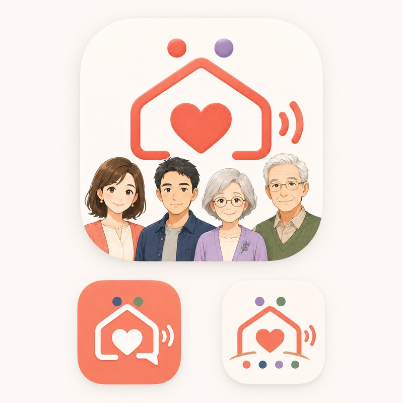

こえかけ家族は、家族みんなの声かけで、毎日の準備をやさしくサポートするルーティン・タイマーアプリです。
Q. データはどこに保存されますか？
A. 家族内の複数端末で共有するため、Google社のFirebaseを通じてクラウドに保存されます。詳しくはプライバシーポリシーをご覧ください。
Q. ファミリーPlusとは何ですか？
A. 登録できるお子様の人数が最大5人まで増え、ばあば・じいじを含む4人のキャラクターすべてが使えるようになる月額・年額プランです。
Q. 購入したファミリーPlusが、他の家族の端末に反映されません
A. ファミリーPlusは、Appleの「ファミリー共有」機能を通じて、同じファミリーグループ内の端末に共有されます。ご家族の端末が同じApple IDのファミリー共有グループに参加しているかをまずご確認ください（お子様のApple IDが13歳未満向けの「子どものApple ID」として作成されている場合、通常は自動的にファミリー共有に含まれます）。
その上で反映されない場合は、各端末のアプリ内「購入を復元」ボタンをお試しください。なお、アプリ内の「家族の連携」（合言葉・QRコード）とAppleの「ファミリー共有」は別の仕組みです。アプリの家族に連携できていても、Appleのファミリー共有に参加していない端末（別のApple IDをお使いの場合など）には購入が共有されませんので、あわせてご確認ください。改善しない場合は下記までご連絡ください。
Q. 家族の連携（ペアリング）がうまくいきません
A. 家族コード、またはQRコードが正しく共有・読み取りされているかご確認の上、改善しない場合は下記までご連絡ください。
Q. アプリを削除するとデータは消えますか？
A. 家族内で共有しているデータはクラウド上に保存されているため、アプリを削除しても完全には削除されません。データの削除をご希望の場合は下記までご連絡ください。